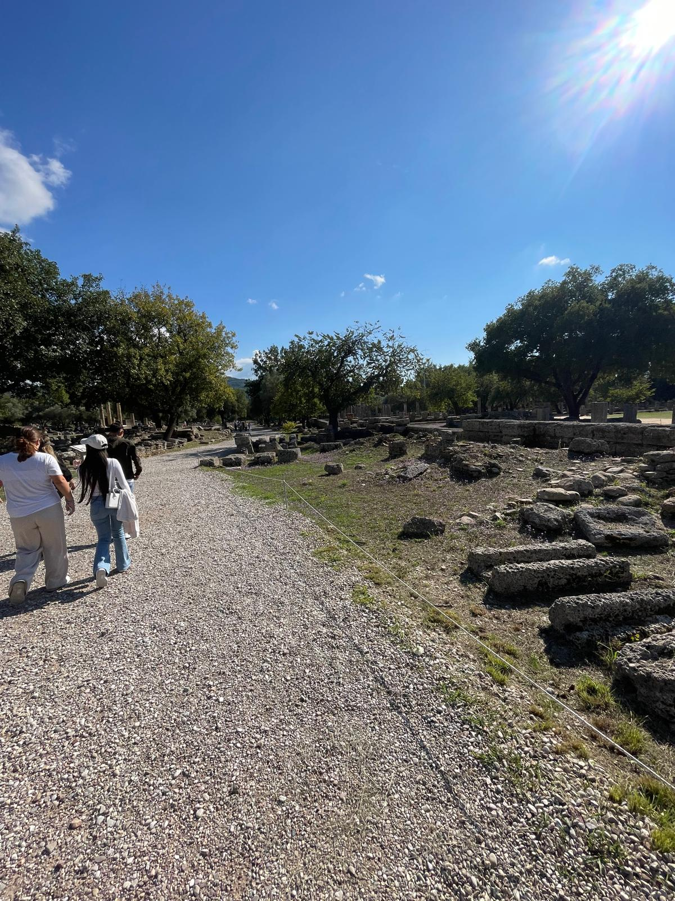
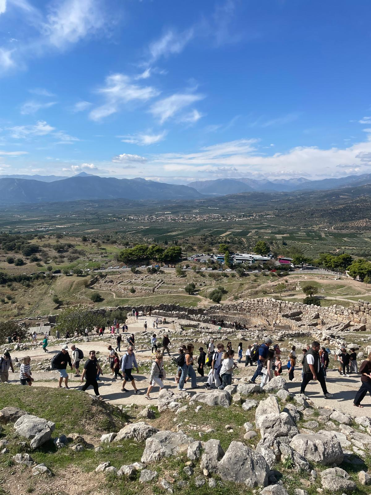

“La curiosità, la determinazione e la voglia di migliorarmi guidano ogni mio obiettivo.”
Mi chiamo Samuel Cirillo e ho frequentato per 5 anni Scienze Applicate, sviluppando competenze scientifiche e tecnologiche.
Durante il viaggio d'istruzione in Grecia ho avuto l'opportunità di visitare luoghi storici e vivere un'esperienza culturale unica insieme ai miei compagni.


Qui puoi visualizzare o scaricare il mio PowerPoint di Educazione Civica, realizzato durante il percorso scolastico.
📊 Apri il PowerPointIn futuro vorrei intraprendere un percorso di studi in dietistica, unendo la passione per la scienza al benessere delle persone.